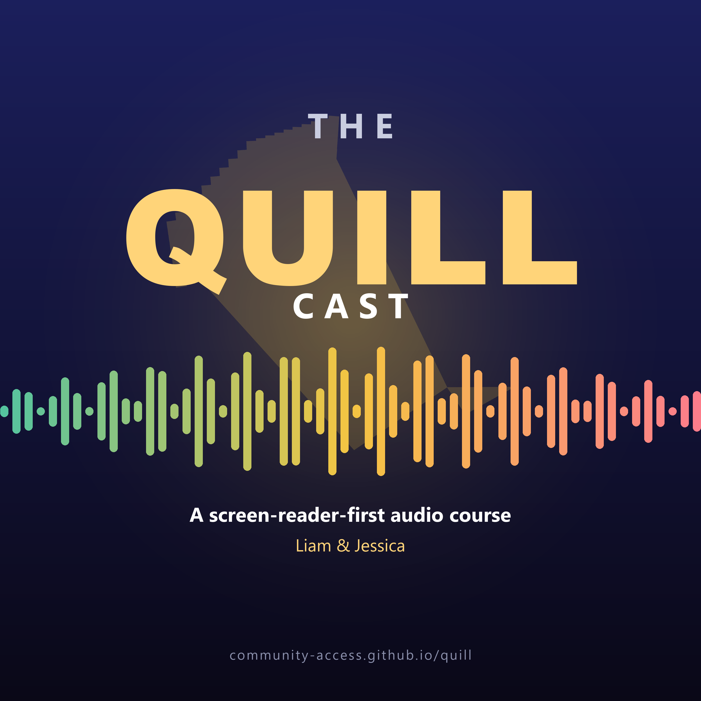

The QUILL Cast

Full cover description
The square cover uses a deep indigo-to-near-black background. Centered near the top, small pale letters spell THE above large gold QUILL text; CAST appears in white below. Behind the title is a faint oversized gold quill angled from upper left to lower right. Across the middle is a horizontal audio waveform made of rounded bars that shift from teal on the left through yellow and gold to coral pink on the right. Under the waveform, white text says A screen-reader-first audio course, followed by Liam & Jessica in gold. The site address appears along the bottom in muted gray.
A complete audio course on the screen-reader-first writing studio.
A 54-episode, two-host audio course on QUILL, the free, screen-reader-first writing studio from Community Access. Liam and Jessica lead you from your very first launch to mastery of every feature family: the editor and keyboard, documents and formats, document rescue and OCR, the private speech suite, optional AI, the Accessible Vault, Story Studio, GLOW accessibility review, braille production, extensions, and the trust architecture underneath it all. Episode voices are generated with QUILL's own on-device Kokoro neural speech engine.
Subscribe
Subscribe with RSS Open the feed URL
Use the RSS feed in any podcast app, or copy this feed address: https://community-access.github.io/quill/podcast/feed.xml
54 episodes, about 125 minutes in total. Every episode has a built-in player below, a download link, and a full accessible transcript.
Part 1 - First Steps
1: Welcome to QUILL
What QUILL is and who it is for: the three design promises, why free matters, and how to follow this course.
2: Install and First Launch
The installer, self-voicing setup, the wizard, and feature profiles - why smaller menus win for screen reader users.
3: Your First Document
Files in and out: new, open, save, recent files, cursor position memory, and the silent crash-recovery net.
4: The Main Window
The menu bar by intent, tabs, the status bar as narrator, the Spoken Echo, the dialog contract, and why nothing steals focus.
5: Notebooks and Versions
Workspace notebooks as a single-window project binder, version snapshots, sticky notes, and the file menu's Notebook submenu.
6: The Command Palette
Ctrl+Shift+P: reach any of hundreds of commands by typing a fragment. The palette as discovery tool and shortcut tutor.
Part 2 - The Everyday Editor
7: What QUILL Says
The verbosity system: profiles, Quiet and Meeting modes, status queries, anti-spam machinery, and the Why did QUILL say that? explainer.
8: Moving Through Text
Navigation as a vocabulary: characters to headings, bookmarks, selection marks, Go To Line, Quick Nav and Browse Mode.
9: The QUILL Key
The prefix system in full: why chords exist, a tour of what lives behind the QUILL key, Browse Mode, and how to adopt chords.
10: Make the Keyboard Yours
The Keymap Editor: two-way search, Record Keys, conflict swaps, diagnostics with one-click Heal, and shareable keyboard packs.
11: Editing Power Tools
Selection and marks, the undo contract, line surgery, section moves, case transforms, and the classics: Repeat and Restore Deleted Text.
12: Power Tools Deep Dive
The Format submenus, the Insert menu's hidden muscle, Tools/Advanced, Work Personas, List Studio, and the editing lens switcher.
13: Find, Replace, Navigate
Search with spoken match counts, replace-all as one undo step, a gentle first regular expression, and Search in Files.
Part 3 - Documents and Formats
14: Compare and Differences
File-vs-file and document-vs-document compare, the F8 layer, difference list, and the original-untouched promise.
15: Spelling and Word Tools
Misspelling navigation (Ctrl+F7), the spell dialog, custom dictionaries, downloadable languages, and the dictionary and thesaurus.
16: Languages and Thesaurus
Spell check languages, the AI Thesaurus, Markdown profile, citation style, inline notes, and language profiles for AI.
17: Never Lose Work
The full safety stack: undo, autosave, crash recovery, backups, versions, snapshots, atomic writes, and honest failure reporting.
18: Markdown and Structure
The structure language everything builds on: core syntax, why structure is audible, the live preview, and the style habits that pay off.
Part 4 - Files and Automation
19: The Text-Supply Toolkit
The twelve-slot Copy Tray, snippets with prompts and cursor markers, auto-expanding abbreviations, and recorded macros.
20: Snippet Gallery and Prompts
Placeholder grammar, smart triggers, the AI Library's three tabs, the snippet vs abbreviation distinction, and starter packs.
Part 5 - Speech
21: Read Aloud and Voices
Read Aloud across the six engines, the cloud voice option, the SSML Builder, the on-device languages, and voice casting.
22: Word, EPUB, PDF and Friends
Other people's formats with dignity: Word round-trips, the EPUB navigator, honest PDF extraction, and batch conversion.
23: Document Rescue and OCR
Free first, local first, nothing uploaded: MarkItDown for born-digital files, on-device Tesseract OCR, and the verified engine install.
24: OCR and Image Describe
Single-image OCR paths, clipboard and screen-capture entry, the image-describe flow, and the local speech model for offline captions.
Part 6 - AI
25: Files Everywhere
FTP, SFTP, WebDAV, and S3 from three commands; GitHub editing with no Git installed; SSH with strict host keys; Open from URL.
26: Watch Folders and Automation
Teach QUILL to work while you're elsewhere: auto-opening inbox folders, watch actions and pipelines, and the safety posture.
27: Publishing and Share
File/Publish submenu, Tools/Share submenu, the connection model, two feature flags, WordPress, and redaction of secrets.
28: Agents - Reviewable Autonomy
Plans you read before they run: the plan-review-execute contract, Accessibility Tune-Up as flagship, partial approval, and the craft of reviewing plans.
Part 7 - Organization, Production, and Trust
29: Voice Catalog Walkthrough
The full voice catalog: SAPI unfiltered, Kokoro, Piper, eSpeak world, DECtalk, and the cloud voice. A voice for every job.
30: Dictation
You talk, QUILL types, offline: Whisper-powered hold-to-talk and locked dictation, model choices, and the speak-fast-repair-fast workflow.
31: Voice and Conversation
Tools/Speech walked top to bottom, the curated allowlist of voice commands, Voice Command vs Voice Conversation Mode vs Hey QUILL wake word.
32: Transcription and the Listening Companion
Recordings into documents, privately: local transcription, Transcript Actions from minutes to follow-up emails, and the no-syntax Action Builder.
33: The Audio Studio
Documents out to sound, all grown up: three journeys, incremental rebuilds, voice casting, AI chapter titles, publishing, and DAISY export.
34: Setting Up AI
Off by default, reviewable always, free for everyone: the wizard's honest choices and the privacy architecture underneath.
35: Ask Quill and Everyday AI
One conversation that knows your document, the quick-action toolkit, AI spell/grammar/thesaurus above the local engines, and custom instructions.
36: The AI Library - Prompts and Skills
A build-along up the ladder: saving prompts, promoting to skills, sharing packs, and the promotion continuum.
More episodes
37: The AI Toolkit
Proofread, Transform Selection, Translate, Read Aloud, Transcribe Audio, the More submenu, and the 16-agent Run Agent catalog.
38: Every-Day Writing Style
AI style customization: writing style, tone, custom instructions per session and globally, and how style propagates to all AI verbs.
39: The AI Library - Prompts and Skills
A build-along up the ladder: saving your first prompt with variables, promoting it into a multi-step skill, and sharing packs.
40: The Accessible Vault
Linked notes rebuilt for the ear: wikilinks, the spoken what links here, Note Neighborhood, unlinked mentions, and fearless rename.
41: Vault Power
Tags that roll up, templates with prompts, daily notes, embeds, exporting your vault as an accessible website, and Git sync.
42: Story Studio
Book-length writing with a keyboard-first binder: structure from your headings, character and plot-thread detail forms as front matter, and compile-to-manuscript.
43: Story Studio Practice
Hands-on build-along: a fresh folder, three Markdown files, a character with role/goal/motivation/arc, a place, a plot thread, and compile.
44: Story Studio + Vault + AIs
Composition: a Story Studio project paired with an Accessible Vault of worldbuilding, Ask Quill for manuscript-wide consistency, one source feeding every export.
45: GLOW - Audit and Fix
Guided confidence: plain-language audits of the document in front of you, in-place selection fixes, and whole-document fixes with before/after compare.
46: GLOW for Files
Scored, graded audits of Word, PowerPoint, Excel, PDF, and EPUB; non-destructive Fix File; and the signature-verified engine update path.
47: Author Tools Mega
One manuscript, six finished artifacts: a guided walkthrough of GLOW audit, compile, Word, EPUB, PDF, DAISY, audiobook, and braille, in order.
48: The Bundled Quillins
A walkthrough of the bundled Quillins (word-count, table-studio, csv-studio, spell-check helpers, and the rest) and how each contributes.
49: Braille Production
BRF, BRL, PEF and UEB workflows; Read Layout Metrics and the longest-line repair loop; trailing-space cleanup; and the cell-two display workaround.
50: Quillins and the Developer Console
The extension system: worker-process fault isolation, Python and JavaScript Quillins, the deliberately-gated marketplace, and the accessible scripting console.
51: Build Your Own Quillin
Build-along: a minimal Quillin in Python (and JavaScript), manifest.json, worker-process fault isolation, install path, and lint with quillin_lint.
52: Trust, Community, and the Road Ahead
The rules, the community and its receipts, the public roadmap, and what QUILL proves about designing screen-reader-first.
53: Accessibility Power User
The companion to the finale: the QuillRichEdit experimental lever, the full keyboard-pack tour, the verbosity deep-dive, and the dialog-cue gate.
54: Power User Stability
The finale: HTML and Encoding, file recovery, Help menu diagnostics, redaction deep-dive, Profile Health Check, and the safety contract that holds it all up.